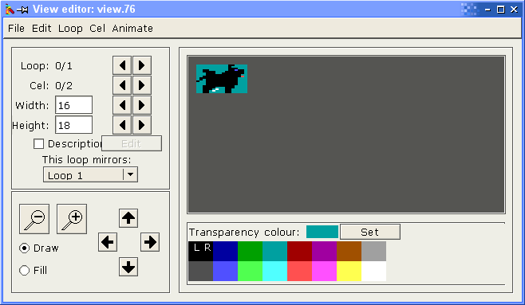
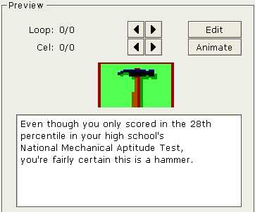

For more information on view resources, click here.
To use the view editor, simply double-click on a view resource in the main window or select 'View Editor' from the 'Tools' menu or toolbar. You can have several view editor windows up at a time.
The view editor looks like this:

This is pretty self explanatory. You can draw in either selected colour using the left or right mouse button.
Colour Palette
This allows you to select drawing colours. You can assign colours to the left or right mouse button by clicking that button on the appropriate colour.
Loop/cel change
The current loop and cel are displayed here. Click the left/right buttons to change loops/cels.
Width/height change
This is the width and height of the current cel. Note that the image is 2*width pixels wide on the screen as each AGI pixel is two normal pixels wide. To change the width or height, click on the appropriate buttons or type in a new value.
The maximum cel size is 160x168 (the size of the AGI playing screen).
Zoom in/out
You can zoom in or out of the view to a maximum of 10x. The default zoom is 2x.
Tool selection
This allows you to select the tool you want to use in the drawing area.
Shift cel
You can shift the cel up, down, left or right using these buttons.
Mirroring
To mirror a loop, just select the number of the loop you want to mirror. Note that when you do this, you lose the current loop and it is replaced with the mirror of the other loop. Always make sure that you change to the "target" loop before doing this.
When loops are mirrored, any change you make to either loop will be replicated in the other. When you select "No other loop", the cels in both loops remain the same but you can now modify them independently.
Transparency
Clicking the "set" button will change the transparent colour of this cel to the colour that is assigned to the left mouse button.
Description
If you want a description, check the description check box and click the 'Edit' button to edit or change it. Note that lines are separated by "\n". The description editor looks like this:

Shortcut Keys
These keys can be used with the view editor:
Q previous loop W next loop A previous cel S next cel Z zoom out X zoom in T set transparent colour D select draw tool F select fill tool I shift cel up K shift cel down J shift cel left L shift cel right CTRL-C copy cel CTRL-V paste cel
Importing view images from other programs using 'copy'/'paste' is not available. The 'copy' and 'paste' functions work only to copy and paste cels between different loops or view editor windows.